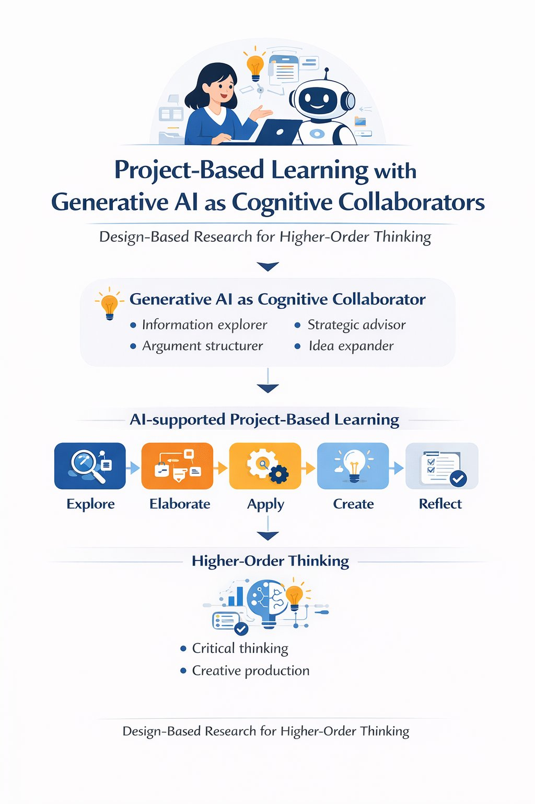
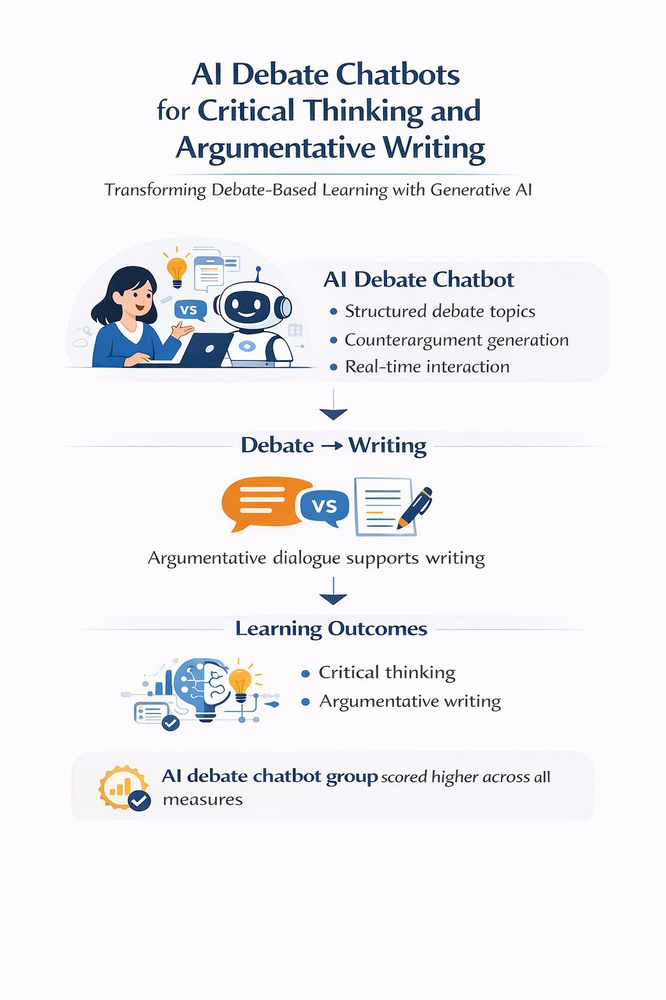
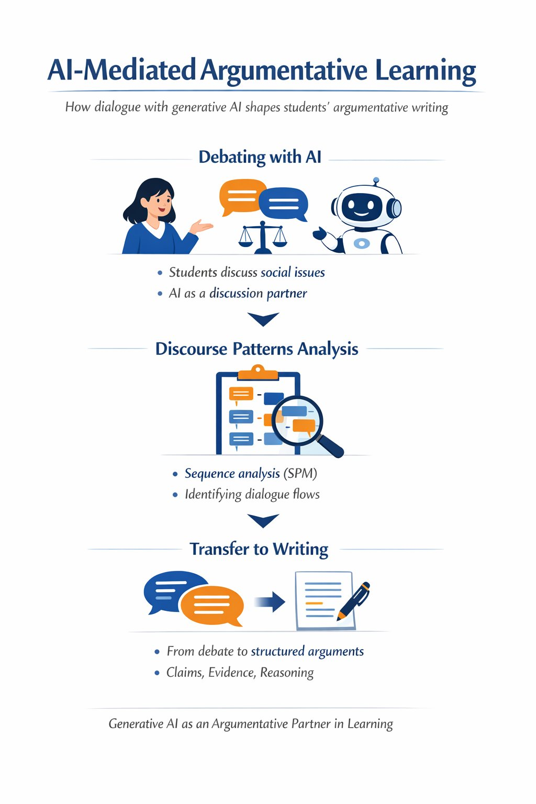

Project-Based Learning with Generative AI as Cognitive Collaborators
Design-based research proposing and refining a cognitive collaborator model for higher-order thinking in project-based learning.
Each conference item includes both a concise explanation of the study and the corresponding one-page infographic.

Design-based research proposing and refining a cognitive collaborator model for higher-order thinking in project-based learning.

Experimental work examining how debate chatbots influence critical thinking, engagement, satisfaction, and argumentative writing.

Sequence analysis of learner–AI discourse and its transfer to argumentative writing structure in elementary learners.